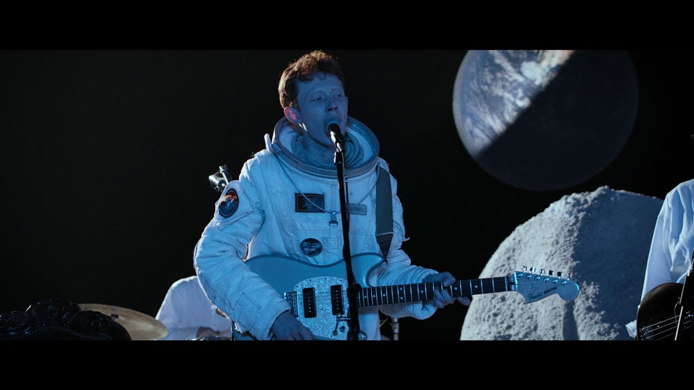

The complete history of music videos can be a hard one to trace, for as long as music has had mass appeal and viability as a “product”, accompanying visual promotion has been a part of the equation. Going back to the plays and “talkies” of the first half of the 20th century, the evolution into what we know today as a music video has been natural with the innovations and accessibility of technology. Previously, music “videos” were in the hands of a wealthy few, with studio resources, commercial viability, and a number of other hoops to jump through that kept such expression out of the hands of the everyman. Gradually, the rising consumer accessibility of video equipment, the internet, and video-sharing sites such as YouTube and other forums saw music videos be put in the hands of the people; anyone with anything to say.
Music videos have long had (and will continue to hold) a special place in my heart. I remember clicking through music videos on YouTube as a kid being one of the first ways I learned to discover new music “on my own”, and quickly becoming one of my favorite pastimes. From finding old rap videos, likely VHS-taped from MTV, to new findings in the digital underground, music videos and their accessibility played a big part in forming the passions that have guided me to who I am today. An equal playing field on a YouTube home page, a video with major industry backing, money, and professional promotion takes up the same amount of space next to a green screen video someone made in their room.
Growing variety in music videos as a format is also something I find fascinating. In King Krule’s “Molten Jets - Live on the Moon”, Archy Marshall (King Krule) and his band play a setlist in one long half music video, half live performance.

^ King Krule - "Molten Jets - Live On The Moon"
Similarly offbeat, but on the other side of budget/pre-planning, Dean Blunt has one of my favorite archives of music visuals on the internet. Spread across YouTube and reuploads often with only a couple thousand views, the visuals for Dean Blunt’s music seem to happen as naturally and creatively as his other art.
^ Dean Blunt - "Felony / Stalker 7"
Finally, homage has always been a big part of music and art. Knowing where things come from is key to knowing where they’re going. Directors like Jelani J. Miller have harnessed an older “MTV-inspired” look, recreating the shoots of 2000’s past with contemporary sensibilities.
^ Tony Shhnow - ATL Freestyle (Dir. Jelani J. Miller)
All unique in their own ways but sharing in the unity of art and visuals, music videos remain a beautiful and exciting meaning for getting a point across.
To go back to a younger me scrolling through YouTube, I could recognize how my interest was often dictated by a given video’s thumbnail and title, making it clear to me even back then how important first impressions are in the attention economy. Seeking to strike a balance between presenting honestly and keeping some level of mystique to drive interest, music videos (especially in their contemporary existence online), are their own category of promotion. Ranging from purposefully cryptic teasers, to all-out tour de forces of production and marketing budget, a music video can really be whatever you make it.